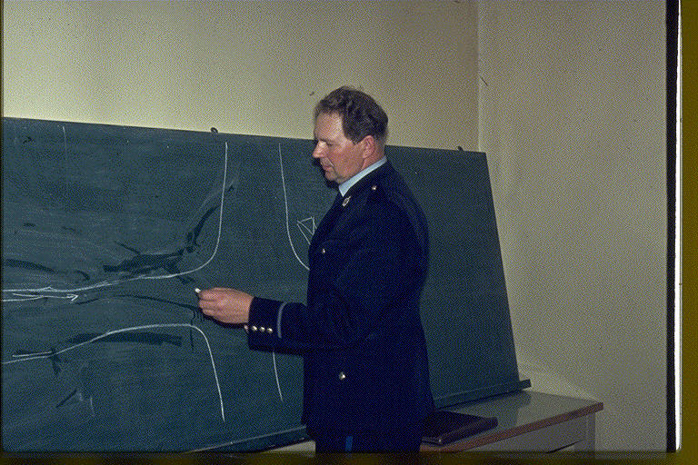
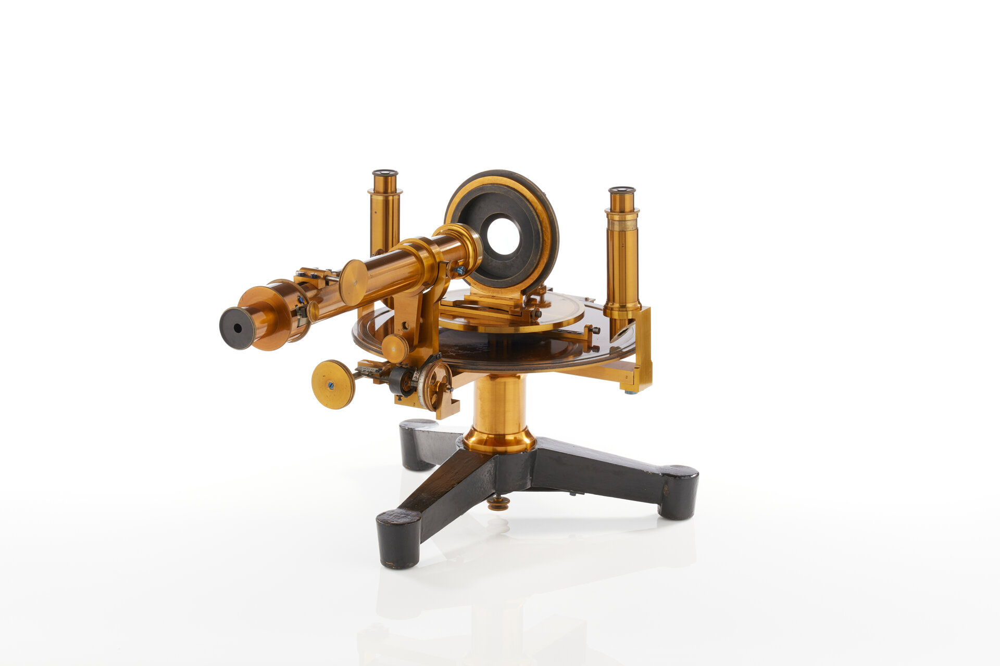

Participating in the tasks can be done as a simple one-off experiment on one or more of the tasks or a more elaborate experimental approach, depending on how you want to work with the challenges.
Experimental reports will be published in the working notes of the workshop, but there is no requirement to submit a formal report; if experiments involve hypothesis testing and exploration of more lasting value, they can be revised and later published elsewhere in more archival channels.

- Fall 2025: task formulation; registration opens
- January 2026: tasks formally announced
- 29 March to 2 April, 2026: presentation of ELOQUENT at the ECIR
- April 23, 2026: registration closes
- May 7 2026: submission deadline of experimental runs from participants
- May 28, 2026: participant report submission deadline
- July 6, 2026: camera ready report submission deadline
- 21-24 September 2026: ELOQUENT workshop at CLEF in Jena
Can your LLM fool a classifier to believe it is human?
This task explores whether automatically-generated text can be distinguished from human-authored text, and is organised in collaboration with the PAN lab at CLEF.
Will your machine respond with the same content to all of us?
This task has run in two variants in previous editions, and this year will tests how well a model achieves consistency across several languages and how well the model adapts to the local culture of a linguistic area.
Can your language model prep, sit, or rate an exam for you?
In an evolved verion of the first year's Topical Quiz Task and the second year's Sensemaking task, this year the Exam task is developed together with the OECD for the purposes of supporting future PISA tests. It will have two subtasks: creating test items from a given text and scoring student responses to test items.
- More information about the quiz test item creation subtask
- More information about the scoring student responses subtask

Do you teach a class related to generative language models? Do you supervise students interested in generative language models? Are you a student searching for a project?
The ELOQUENT tasks are suitable for use as a class assignment or as a diploma project. Get in touch with us for suggestions of extensions and other ideas!
The third ELOQUENT Workshop will be held at the CLEF conference in Jena, September 21-24 2026.
The workshop program will hold overview presentations, an invited keynote, and some selected participant presentations.
The first edition of ELOQUENT ran in 2024 and involved four tasks: Voight-Kampff, Hallucigen, Robustness and Consistency, and Topical Quiz.
- A first presentation and announcement of the first 2024 edition of ELOQUENT is in the Proceedings of the 2024 European Conference on Information Retrieval (ECIR)
- Overview of the results from ELOQUENT 2024 is in the CLEF 2024 publication, volume 2
- Comprehensive task reports and participant papers from 2024 are in the CLEF 2024 Working notes
The second edition of ELOQUENT ran in 2025 and involved four tasks: Voight-Kampff, Robustness and Consistency, Preference Prediction, and Sensemaking (a development of the Topical Quiz task).
- A first presentation and announcement of the second 2025 edition of ELOQUENT is in the Proceedings of the 2025 European Conference on Information Retrieval (ECIR)
- Overview of ELOQUENT 2025 is in the CLEF 2025 Proceedings : Experimental IR Meets Multilinguality, Multimodality, and Interaction 16th International Conference of the CLEF Association. 2025. Springer.
- Comprehensive task reports and participant papers from 2025 are in the CLEF 2025 Working notes
- AMD Silo AI: Maria Barrett, Jussi Karlgren, Georgios Stampoulidis
- Charles University: Ondřej Bojar and Pavel Šindelář
- Fraunhofer IAIS: Marie Isabel Engels
- OECD: Mario Piacentini, Luis Francisco Vargas Madriz, Katherina Thomas
- Université Grenoble Alpes: Diandra Fabre, Lorraine Goeuriot, Philippe Mulhem, Didier Schwab, Markarit Vartampetian
- Université de Toulouse, IRIT: Josiane Mothe
Committee members for past editions:
2024: Luise Dürlich, Evangelia Gogoulou, Liane Guillou, Joakim Nivre, Magnus Sahlgren, Aarne Talman
2025: Ekaterina Artemova, Vladislav Mikhailov, Erik Velldal, Lilja Øvrelid
The ELOQUENT lab is partially supported by the OpenEuroLLM and the DeployAI projects through their activities on building, evaluating, and disseminating generative language models.
Page layout from Codepen.